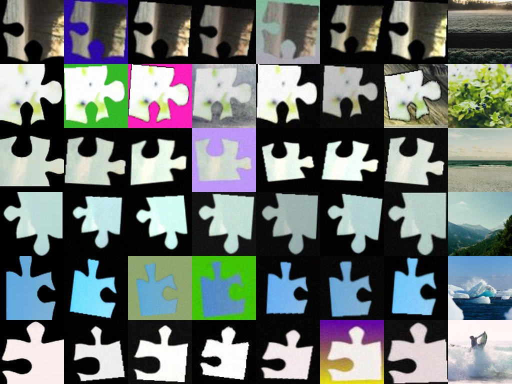

<meta charset="utf-8">
<title>Exp 26 — Domain Randomization</title>
<style>
:root {
  --page:#f7f7f4; --surface:#fdfdfc; --ink:#151414; --ink2:#535049; --muted:#8a877f;
  --grid:#e3e2da; --border:rgba(21,20,20,.10);
  --s1:#2a78d6; --s2:#1baf7a; --s3:#eda100; --s4:#4a3aa7; --s5:#e34948;
  --good:#006300; --bad:#b32e2e; --conf-ink-hi:#fff;
  --callout:#eef3fa;
  color-scheme: light;
}
@media (prefers-color-scheme: dark) {
  :root:not([data-theme="light"]) {
    --page:#101010; --surface:#1a1a19; --ink:#f2f1ec; --ink2:#c3c2b7; --muted:#8a877f;
    --grid:#2c2c2a; --border:rgba(255,255,255,.12);
    --s1:#3987e5; --s2:#199e70; --s3:#c98500; --s4:#9085e9; --s5:#e66767;
    --good:#0ca30c; --bad:#e66767; --conf-ink-hi:#0b0b0b;
    --callout:#1c2431;
    color-scheme: dark;
  }
}
:root[data-theme="dark"] {
  --page:#101010; --surface:#1a1a19; --ink:#f2f1ec; --ink2:#c3c2b7; --muted:#8a877f;
  --grid:#2c2c2a; --border:rgba(255,255,255,.12);
  --s1:#3987e5; --s2:#199e70; --s3:#c98500; --s4:#9085e9; --s5:#e66767;
  --good:#0ca30c; --bad:#e66767; --conf-ink-hi:#0b0b0b;
  --callout:#1c2431;
  color-scheme: dark;
}
* { box-sizing: border-box; }
html { background: var(--page); }
body {
  margin: 0; padding: 0 20px 80px; background: var(--page); color: var(--ink);
  font: 16px/1.6 system-ui, -apple-system, "Segoe UI", sans-serif;
}
main { max-width: 880px; margin: 0 auto; }
h1, h2, h3, .eyebrow { font-family: "Avenir Next", Avenir, "Segoe UI", system-ui, sans-serif; }
h1 { font-size: 34px; line-height: 1.15; font-weight: 700; letter-spacing: -0.01em; margin: 10px 0 6px; text-wrap: balance; }
h2 { font-size: 21px; font-weight: 600; margin: 56px 0 6px; letter-spacing: -0.005em; }
h2 + p.lede { margin-top: 4px; }
.eyebrow { text-transform: uppercase; letter-spacing: .14em; font-size: 12px; font-weight: 600; color: var(--ink2); margin: 48px 0 0; }
header .eyebrow { margin: 0; color: var(--s1); }
p { max-width: 66ch; color: var(--ink); }
p.lede { color: var(--ink2); font-size: 17px; }
.meta { color: var(--muted); font-size: 13.5px; margin-top: 2px; }
.tiles { display: grid; grid-template-columns: repeat(auto-fit, minmax(190px, 1fr)); gap: 12px; margin: 28px 0 8px; }
.tile { background: var(--surface); border: 1px solid var(--border); border-radius: 10px; padding: 16px 18px 14px; }
.tile .num { font-size: 36px; font-weight: 700; line-height: 1.1; font-family: "Avenir Next", Avenir, system-ui, sans-serif; }
.tile .lbl { font-size: 13px; color: var(--ink2); margin-top: 4px; line-height: 1.35; }
.tile .sub { font-size: 12.5px; color: var(--muted); margin-top: 6px; }
.tile.win .num { color: var(--s1); }
.tile.fail .num { color: var(--bad); }
figure.chart { background: var(--surface); border: 1px solid var(--border); border-radius: 10px; padding: 18px 18px 10px; margin: 18px 0; overflow-x: auto; }
figure.chart figcaption { font-size: 14px; font-weight: 600; margin-bottom: 10px; color: var(--ink); }
figure.chart .note { font-size: 12.5px; color: var(--muted); font-weight: 400; }
svg { width: 100%; height: auto; display: block; }
svg .grid { stroke: var(--grid); stroke-width: 1; }
svg .tick { fill: var(--muted); font-size: 12px; font-family: ui-monospace, "SF Mono", Menlo, monospace; }
svg .rowlab { fill: var(--ink); font-size: 13px; font-family: system-ui, sans-serif; }
svg .gridlab { fill: var(--muted); font-size: 11px; }
svg .vallab { fill: var(--ink2); font-size: 11.5px; font-family: ui-monospace, "SF Mono", Menlo, monospace; }
svg .delta { fill: var(--bad); font-size: 11.5px; font-family: ui-monospace, "SF Mono", Menlo, monospace; }
svg .delta-up { fill: var(--good); font-size: 11.5px; font-family: ui-monospace, "SF Mono", Menlo, monospace; }
svg [data-tip] { cursor: default; }
table { border-collapse: collapse; width: 100%; background: var(--surface); border: 1px solid var(--border); border-radius: 10px; overflow: hidden; font-size: 14.5px; }
th, td { text-align: left; padding: 9px 14px; border-top: 1px solid var(--border); font-variant-numeric: tabular-nums; }
thead th { border-top: none; font-size: 12px; text-transform: uppercase; letter-spacing: .08em; color: var(--ink2); background: color-mix(in oklab, var(--surface) 60%, var(--page)); }
td:nth-child(n+2), th:nth-child(n+2) { text-align: right; }
tr.lead-row td { font-weight: 650; }
.table-wrap { overflow-x: auto; border-radius: 10px; margin: 18px 0; }
.swatch { display: inline-block; width: 11px; height: 11px; border-radius: 3px; margin-right: 8px; vertical-align: baseline; }
.callout { background: var(--callout); border: 1px solid var(--border); border-left: 3px solid var(--s1); border-radius: 8px; padding: 14px 18px; margin: 22px 0; font-size: 14.5px; }
.callout p { margin: 6px 0; max-width: none; }
.cf-row { display: flex; gap: 16px; flex-wrap: wrap; margin: 18px 0; }
.cf { flex: 1 1 300px; background: var(--surface); border: 1px solid var(--border); border-radius: 10px; padding: 16px; margin: 0; }
.cf figcaption { font-size: 13.5px; font-weight: 600; margin-bottom: 10px; }
.cf-grid { display: grid; grid-template-columns: 44px repeat(4, 1fr); gap: 2px; font-family: ui-monospace, "SF Mono", Menlo, monospace; font-size: 12px; }
.cf-head { text-align: center; color: var(--muted); padding: 4px 0; }
.cf-side { display: flex; align-items: center; justify-content: flex-end; padding-right: 8px; }
.cf-cell { aspect-ratio: 1.6; display: flex; align-items: center; justify-content: center; border-radius: 4px; }
.pipeline { display: grid; grid-template-columns: repeat(auto-fit, minmax(160px, 1fr)); gap: 14px; margin: 18px 0; }
.pipeline figure { margin: 0; background: var(--surface); border: 1px solid var(--border); border-radius: 10px; padding: 10px; }
.pipeline img { width: 100%; border-radius: 6px; display: block; }
.pipeline figcaption { font-size: 12.5px; color: var(--ink2); margin-top: 8px; line-height: 1.4; }
ol.findings { padding-left: 20px; display: grid; gap: 10px; max-width: 72ch; }
ol.findings li::marker { color: var(--s1); font-weight: 700; }
.next { border: 1px solid var(--border); border-radius: 10px; padding: 4px 20px 12px; background: var(--surface); max-width: none; }
.next p { max-width: none; }
#tooltip {
  position: fixed; pointer-events: none; z-index: 10; max-width: 280px;
  background: var(--ink); color: var(--page); font-size: 12.5px; line-height: 1.4;
  padding: 6px 10px; border-radius: 6px; opacity: 0; transition: opacity .12s;
}
@media (prefers-reduced-motion: reduce) { #tooltip { transition: none; } }
footer { margin-top: 64px; color: var(--muted); font-size: 13px; border-top: 1px solid var(--border); padding-top: 14px; }
code { font-family: ui-monospace, "SF Mono", Menlo, monospace; font-size: .92em; background: color-mix(in oklab, var(--surface) 55%, var(--page)); padding: 1px 5px; border-radius: 4px; border: 1px solid var(--border); }
</style>
<main>
<header>
  <p class="eyebrow">Pussel · Experiment 26 · July 2026</p>
  <h1>Better in sim. Still blind on camera.</h1>
  <p class="lede">Retraining the exp20 CNN with domain randomization — independent piece/puzzle photometrics,
  scale, perspective, rotation jitter, realistic backgrounds, mask error, sensor noise, JPEG — lifts the
  synthetic benchmark on every metric. On the north-star real photos it changes nothing.</p>
  <p class="meta">Same architecture, frozen split and protocol as exp20/exp25 · RunPod RTX 4090, 50 epochs, 2.2 h ·
  checkpoint selected on val · synthetic test and north_star each touched once</p>
</header>

<div class="tiles">
  <div class="tile win"><div class="num">76.2%</div>
    <div class="lbl">Synthetic test, cell + rotation correct</div>
    <div class="sub">exp20: 72.2%. Best learned result on this benchmark — DR acted as a regularizer.</div></div>
  <div class="tile fail"><div class="num">12.7%</div>
    <div class="lbl">north_star v1, cell + rotation correct</div>
    <div class="sub">exp20: 14.8%. Zero transfer — the hybrid bar stays at 76.7%.</div></div>
  <div class="tile"><div class="num">99.0%</div>
    <div class="lbl">Synthetic rotation accuracy</div>
    <div class="sub">…but 33.5% on real photos, barely above the 25% floor.</div></div>
</div>

<h2>Synthetic benchmark vs. real photos</h2>
<p class="lede">Both-correct per method. Hollow = synthetic 4×4 benchmark; filled = north_star real photos.
Domain randomization moves the hollow points right and the filled points not at all.</p>
<figure class="chart">
  <figcaption>Cell + rotation correct, by method <span class="note">· hover for exact values</span></figcaption>
  <svg viewBox="0 0 860 210" role="img" aria-label="Both-correct accuracy, synthetic vs real, per method">
<line class="grid" x1="170" y1="14" x2="170" y2="178"/>
<text class="tick" x="170" y="196" text-anchor="middle">0%</text>
<line class="grid" x1="332" y1="14" x2="332" y2="178"/>
<text class="tick" x="332" y="196" text-anchor="middle">25%</text>
<line class="grid" x1="495" y1="14" x2="495" y2="178"/>
<text class="tick" x="495" y="196" text-anchor="middle">50%</text>
<line class="grid" x1="658" y1="14" x2="658" y2="178"/>
<text class="tick" x="658" y="196" text-anchor="middle">75%</text>
<line class="grid" x1="820" y1="14" x2="820" y2="178"/>
<text class="tick" x="820" y="196" text-anchor="middle">100%</text>
<text class="rowlab" x="160" y="42" text-anchor="end">SIFT→NCC hybrid</text>
<g data-tip="SIFT→NCC hybrid: synthetic 82.2% → real 76.7% (-5.5 pts)"><line x1="668.5" x2="704.3" y1="38" y2="38" stroke="var(--s2)" stroke-width="2" opacity="0.55"/><circle cx="704.3" cy="38" r="6" fill="var(--surface)" stroke="var(--s2)" stroke-width="2.5"/><circle cx="668.5" cy="38" r="6.5" fill="var(--s2)" stroke="var(--surface)" stroke-width="2"/></g>
<text class="delta" x="658.5" y="42" text-anchor="end">-5.5</text>
<text class="rowlab" x="160" y="82" text-anchor="end">CNN exp26 (domain rand.)</text>
<g data-tip="CNN exp26 (domain rand.): synthetic 76.2% → real 12.7% (-63.5 pts)"><line x1="252.6" x2="665.3" y1="78" y2="78" stroke="var(--s1)" stroke-width="2" opacity="0.55"/><circle cx="665.3" cy="78" r="6" fill="var(--surface)" stroke="var(--s1)" stroke-width="2.5"/><circle cx="252.6" cy="78" r="6.5" fill="var(--s1)" stroke="var(--surface)" stroke-width="2"/></g>
<text class="delta" x="242.6" y="82" text-anchor="end">-63.5</text>
<text class="rowlab" x="160" y="122" text-anchor="end">CNN exp26 + rot search</text>
<g data-tip="CNN exp26 + rot search: synthetic 76.2% → real 13.8% (-62.4 pts)"><line x1="259.7" x2="665.3" y1="118" y2="118" stroke="var(--s4)" stroke-width="2" opacity="0.55"/><circle cx="665.3" cy="118" r="6" fill="var(--surface)" stroke="var(--s4)" stroke-width="2.5"/><circle cx="259.7" cy="118" r="6.5" fill="var(--s4)" stroke="var(--surface)" stroke-width="2"/></g>
<text class="delta" x="249.7" y="122" text-anchor="end">-62.4</text>
<text class="rowlab" x="160" y="162" text-anchor="end">CNN exp20 (no DR)</text>
<g data-tip="CNN exp20 (no DR): synthetic 72.2% → real 14.8% (-57.4 pts)"><line x1="266.2" x2="639.3" y1="158" y2="158" stroke="var(--s3)" stroke-width="2" opacity="0.55"/><circle cx="639.3" cy="158" r="6" fill="var(--surface)" stroke="var(--s3)" stroke-width="2.5"/><circle cx="266.2" cy="158" r="6.5" fill="var(--s3)" stroke="var(--surface)" stroke-width="2"/></g>
<text class="delta" x="256.2" y="162" text-anchor="end">-57.4</text></svg>
</figure>

<h2>Training: the augmentation is learnable</h2>
<p class="lede">Validation accuracy per epoch. Train and val overlapped throughout (under DR the model cannot
memorize appearance) and both were still climbing at epoch 50 — the failure below is not underfitting.</p>
<figure class="chart">
  <figcaption>Validation accuracy across 50 epochs <span class="note">· both = dashed (it tracks cell almost exactly) · hover markers for exact values</span></figcaption>
  <svg viewBox="0 0 950 292" role="img" aria-label="Validation accuracy per epoch">
<line class="grid" x1="70" y1="250" x2="820" y2="250"/>
<text class="tick" x="62" y="254" text-anchor="end">0%</text>
<line class="grid" x1="70" y1="193" x2="820" y2="193"/>
<text class="tick" x="62" y="197" text-anchor="end">25%</text>
<line class="grid" x1="70" y1="136" x2="820" y2="136"/>
<text class="tick" x="62" y="140" text-anchor="end">50%</text>
<line class="grid" x1="70" y1="79" x2="820" y2="79"/>
<text class="tick" x="62" y="83" text-anchor="end">75%</text>
<line class="grid" x1="70" y1="22" x2="820" y2="22"/>
<text class="tick" x="62" y="26" text-anchor="end">100%</text>
<text class="tick" x="70" y="272" text-anchor="middle">1</text>
<text class="tick" x="208" y="272" text-anchor="middle">10</text>
<text class="tick" x="361" y="272" text-anchor="middle">20</text>
<text class="tick" x="514" y="272" text-anchor="middle">30</text>
<text class="tick" x="667" y="272" text-anchor="middle">40</text>
<text class="tick" x="820" y="272" text-anchor="middle">50</text>
<text class="gridlab" x="445" y="289" text-anchor="middle">epoch</text>
<polyline points="70.0,53.4 85.3,40.4 100.6,33.9 115.9,30.5 131.2,29.3 146.5,28.2 161.8,28.0 177.1,27.1 192.4,27.2 207.8,26.5 223.1,26.5 238.4,25.9 253.7,25.9 269.0,26.0 284.3,25.9 299.6,25.6 314.9,25.5 330.2,25.4 345.5,25.3 360.8,25.4 376.1,25.1 391.4,25.1 406.7,25.3 422.0,25.2 437.3,25.0 452.7,25.3 468.0,24.8 483.3,25.0 498.6,25.0 513.9,24.9 529.2,24.7 544.5,24.6 559.8,24.6 575.1,24.5 590.4,24.5 605.7,24.3 621.0,24.4 636.3,24.4 651.6,24.4 666.9,24.2 682.2,24.3 697.6,24.2 712.9,24.5 728.2,24.3 743.5,24.2 758.8,24.0 774.1,24.2 789.4,24.4 804.7,24.2 820.0,24.0" fill="none" stroke="var(--s2)" stroke-width="2"/>
<circle cx="131.2" cy="29.3" r="8" fill="transparent" data-tip="epoch 5 · val rotation 96.8%"/>
<circle cx="131.2" cy="29.3" r="3" fill="var(--s2)" stroke="var(--surface)" stroke-width="1.5" pointer-events="none"/>
<circle cx="207.8" cy="26.5" r="8" fill="transparent" data-tip="epoch 10 · val rotation 98.0%"/>
<circle cx="207.8" cy="26.5" r="3" fill="var(--s2)" stroke="var(--surface)" stroke-width="1.5" pointer-events="none"/>
<circle cx="284.3" cy="25.9" r="8" fill="transparent" data-tip="epoch 15 · val rotation 98.3%"/>
<circle cx="284.3" cy="25.9" r="3" fill="var(--s2)" stroke="var(--surface)" stroke-width="1.5" pointer-events="none"/>
<circle cx="360.8" cy="25.4" r="8" fill="transparent" data-tip="epoch 20 · val rotation 98.5%"/>
<circle cx="360.8" cy="25.4" r="3" fill="var(--s2)" stroke="var(--surface)" stroke-width="1.5" pointer-events="none"/>
<circle cx="437.3" cy="25.0" r="8" fill="transparent" data-tip="epoch 25 · val rotation 98.7%"/>
<circle cx="437.3" cy="25.0" r="3" fill="var(--s2)" stroke="var(--surface)" stroke-width="1.5" pointer-events="none"/>
<circle cx="513.9" cy="24.9" r="8" fill="transparent" data-tip="epoch 30 · val rotation 98.7%"/>
<circle cx="513.9" cy="24.9" r="3" fill="var(--s2)" stroke="var(--surface)" stroke-width="1.5" pointer-events="none"/>
<circle cx="590.4" cy="24.5" r="8" fill="transparent" data-tip="epoch 35 · val rotation 98.9%"/>
<circle cx="590.4" cy="24.5" r="3" fill="var(--s2)" stroke="var(--surface)" stroke-width="1.5" pointer-events="none"/>
<circle cx="666.9" cy="24.2" r="8" fill="transparent" data-tip="epoch 40 · val rotation 99.0%"/>
<circle cx="666.9" cy="24.2" r="3" fill="var(--s2)" stroke="var(--surface)" stroke-width="1.5" pointer-events="none"/>
<circle cx="743.5" cy="24.2" r="8" fill="transparent" data-tip="epoch 45 · val rotation 99.0%"/>
<circle cx="743.5" cy="24.2" r="3" fill="var(--s2)" stroke="var(--surface)" stroke-width="1.5" pointer-events="none"/>
<circle cx="820.0" cy="24.0" r="8" fill="transparent" data-tip="epoch 50 · val rotation 99.1%"/>
<circle cx="820.0" cy="24.0" r="3" fill="var(--s2)" stroke="var(--surface)" stroke-width="1.5" pointer-events="none"/>
<circle cx="70.0" cy="53.4" r="8" fill="transparent" data-tip="epoch 1 · val rotation 86.2%"/>
<circle cx="70.0" cy="53.4" r="3" fill="var(--s2)" stroke="var(--surface)" stroke-width="1.5" pointer-events="none"/>
<text class="vallab" x="828" y="28.0" fill="var(--s2)">rotation 99.1%</text>
<polyline points="70.0,225.6 85.3,219.1 100.6,214.5 115.9,207.7 131.2,198.7 146.5,187.1 161.8,176.5 177.1,166.7 192.4,154.6 207.8,147.8 223.1,140.5 238.4,131.7 253.7,129.0 269.0,124.3 284.3,116.2 299.6,115.7 314.9,112.9 330.2,107.6 345.5,104.5 360.8,105.2 376.1,104.7 391.4,101.2 406.7,99.0 422.0,99.6 437.3,93.7 452.7,100.0 468.0,94.2 483.3,92.5 498.6,91.1 513.9,88.0 529.2,90.4 544.5,87.4 559.8,89.4 575.1,86.5 590.4,86.5 605.7,82.6 621.0,84.2 636.3,84.2 651.6,82.8 666.9,79.3 682.2,83.3 697.6,82.0 712.9,80.8 728.2,77.8 743.5,78.1 758.8,76.3 774.1,76.0 789.4,79.0 804.7,76.9 820.0,74.3" fill="none" stroke="var(--s1)" stroke-width="2"/>
<circle cx="131.2" cy="198.7" r="8" fill="transparent" data-tip="epoch 5 · val cell 22.5%"/>
<circle cx="131.2" cy="198.7" r="3" fill="var(--s1)" stroke="var(--surface)" stroke-width="1.5" pointer-events="none"/>
<circle cx="207.8" cy="147.8" r="8" fill="transparent" data-tip="epoch 10 · val cell 44.8%"/>
<circle cx="207.8" cy="147.8" r="3" fill="var(--s1)" stroke="var(--surface)" stroke-width="1.5" pointer-events="none"/>
<circle cx="284.3" cy="116.2" r="8" fill="transparent" data-tip="epoch 15 · val cell 58.7%"/>
<circle cx="284.3" cy="116.2" r="3" fill="var(--s1)" stroke="var(--surface)" stroke-width="1.5" pointer-events="none"/>
<circle cx="360.8" cy="105.2" r="8" fill="transparent" data-tip="epoch 20 · val cell 63.5%"/>
<circle cx="360.8" cy="105.2" r="3" fill="var(--s1)" stroke="var(--surface)" stroke-width="1.5" pointer-events="none"/>
<circle cx="437.3" cy="93.7" r="8" fill="transparent" data-tip="epoch 25 · val cell 68.5%"/>
<circle cx="437.3" cy="93.7" r="3" fill="var(--s1)" stroke="var(--surface)" stroke-width="1.5" pointer-events="none"/>
<circle cx="513.9" cy="88.0" r="8" fill="transparent" data-tip="epoch 30 · val cell 71.1%"/>
<circle cx="513.9" cy="88.0" r="3" fill="var(--s1)" stroke="var(--surface)" stroke-width="1.5" pointer-events="none"/>
<circle cx="590.4" cy="86.5" r="8" fill="transparent" data-tip="epoch 35 · val cell 71.7%"/>
<circle cx="590.4" cy="86.5" r="3" fill="var(--s1)" stroke="var(--surface)" stroke-width="1.5" pointer-events="none"/>
<circle cx="666.9" cy="79.3" r="8" fill="transparent" data-tip="epoch 40 · val cell 74.9%"/>
<circle cx="666.9" cy="79.3" r="3" fill="var(--s1)" stroke="var(--surface)" stroke-width="1.5" pointer-events="none"/>
<circle cx="743.5" cy="78.1" r="8" fill="transparent" data-tip="epoch 45 · val cell 75.4%"/>
<circle cx="743.5" cy="78.1" r="3" fill="var(--s1)" stroke="var(--surface)" stroke-width="1.5" pointer-events="none"/>
<circle cx="820.0" cy="74.3" r="8" fill="transparent" data-tip="epoch 50 · val cell 77.1%"/>
<circle cx="820.0" cy="74.3" r="3" fill="var(--s1)" stroke="var(--surface)" stroke-width="1.5" pointer-events="none"/>
<circle cx="70.0" cy="225.6" r="8" fill="transparent" data-tip="epoch 1 · val cell 10.7%"/>
<circle cx="70.0" cy="225.6" r="3" fill="var(--s1)" stroke="var(--surface)" stroke-width="1.5" pointer-events="none"/>
<text class="vallab" x="828" y="78.3" fill="var(--s1)">cell 77.1%</text>
<polyline points="70.0,227.8 85.3,220.9 100.6,215.7 115.9,208.6 131.2,199.4 146.5,187.9 161.8,177.2 177.1,167.3 192.4,155.3 207.8,148.2 223.1,141.1 238.4,132.3 253.7,129.5 269.0,125.0 284.3,116.8 299.6,116.1 314.9,113.3 330.2,108.1 345.5,105.0 360.8,105.7 376.1,105.2 391.4,101.6 406.7,99.6 422.0,100.2 437.3,94.3 452.7,100.5 468.0,94.7 483.3,92.9 498.6,91.6 513.9,88.5 529.2,90.8 544.5,87.8 559.8,89.7 575.1,86.9 590.4,86.8 605.7,82.9 621.0,84.5 636.3,84.5 651.6,83.2 666.9,79.6 682.2,83.6 697.6,82.3 712.9,81.2 728.2,78.1 743.5,78.5 758.8,76.5 774.1,76.4 789.4,79.4 804.7,77.2 820.0,74.6" fill="none" stroke="var(--s4)" stroke-width="2" stroke-dasharray="7 5"/>
<circle cx="131.2" cy="199.4" r="8" fill="transparent" data-tip="epoch 5 · val both 22.2%"/>
<circle cx="131.2" cy="199.4" r="3" fill="var(--s4)" stroke="var(--surface)" stroke-width="1.5" pointer-events="none"/>
<circle cx="207.8" cy="148.2" r="8" fill="transparent" data-tip="epoch 10 · val both 44.6%"/>
<circle cx="207.8" cy="148.2" r="3" fill="var(--s4)" stroke="var(--surface)" stroke-width="1.5" pointer-events="none"/>
<circle cx="284.3" cy="116.8" r="8" fill="transparent" data-tip="epoch 15 · val both 58.4%"/>
<circle cx="284.3" cy="116.8" r="3" fill="var(--s4)" stroke="var(--surface)" stroke-width="1.5" pointer-events="none"/>
<circle cx="360.8" cy="105.7" r="8" fill="transparent" data-tip="epoch 20 · val both 63.3%"/>
<circle cx="360.8" cy="105.7" r="3" fill="var(--s4)" stroke="var(--surface)" stroke-width="1.5" pointer-events="none"/>
<circle cx="437.3" cy="94.3" r="8" fill="transparent" data-tip="epoch 25 · val both 68.3%"/>
<circle cx="437.3" cy="94.3" r="3" fill="var(--s4)" stroke="var(--surface)" stroke-width="1.5" pointer-events="none"/>
<circle cx="513.9" cy="88.5" r="8" fill="transparent" data-tip="epoch 30 · val both 70.9%"/>
<circle cx="513.9" cy="88.5" r="3" fill="var(--s4)" stroke="var(--surface)" stroke-width="1.5" pointer-events="none"/>
<circle cx="590.4" cy="86.8" r="8" fill="transparent" data-tip="epoch 35 · val both 71.6%"/>
<circle cx="590.4" cy="86.8" r="3" fill="var(--s4)" stroke="var(--surface)" stroke-width="1.5" pointer-events="none"/>
<circle cx="666.9" cy="79.6" r="8" fill="transparent" data-tip="epoch 40 · val both 74.7%"/>
<circle cx="666.9" cy="79.6" r="3" fill="var(--s4)" stroke="var(--surface)" stroke-width="1.5" pointer-events="none"/>
<circle cx="743.5" cy="78.5" r="8" fill="transparent" data-tip="epoch 45 · val both 75.2%"/>
<circle cx="743.5" cy="78.5" r="3" fill="var(--s4)" stroke="var(--surface)" stroke-width="1.5" pointer-events="none"/>
<circle cx="820.0" cy="74.6" r="8" fill="transparent" data-tip="epoch 50 · val both 76.9%"/>
<circle cx="820.0" cy="74.6" r="3" fill="var(--s4)" stroke="var(--surface)" stroke-width="1.5" pointer-events="none"/>
<circle cx="70.0" cy="227.8" r="8" fill="transparent" data-tip="epoch 1 · val both 9.7%"/>
<circle cx="70.0" cy="227.8" r="3" fill="var(--s4)" stroke="var(--surface)" stroke-width="1.5" pointer-events="none"/>
<text class="vallab" x="828" y="92.6" fill="var(--s4)">both 76.9%</text></svg>
</figure>

<h2>Full results</h2>
<div class="table-wrap"><table>
<thead><tr><th>Method</th><th>Synthetic both</th><th>Real cell</th><th>Real rotation</th><th>Real both</th><th>ms/sample</th></tr></thead>
<tbody>
<tr class="lead-row"><td><span class="swatch" style="background:var(--s2)"></span>SIFT→NCC hybrid (zero training)</td>
  <td>82.2%</td><td>77.9%</td><td>89.2%</td><td>76.7%</td><td>88</td></tr>
<tr><td><span class="swatch" style="background:var(--s1)"></span>CNN exp26 (domain randomization)</td>
  <td><strong>76.2%</strong></td><td>22.3%</td><td>33.5%</td><td>12.7%</td><td>2</td></tr>
<tr><td><span class="swatch" style="background:var(--s4)"></span>CNN exp26 + test-time rotation search</td>
  <td>76.2%</td><td>23.3%</td><td>34.6%</td><td>13.8%</td><td>8</td></tr>
<tr><td><span class="swatch" style="background:var(--s3)"></span>CNN exp20 (no domain randomization)</td>
  <td>72.2%</td><td>22.4%</td><td>44.0%</td><td>14.8%</td><td>3</td></tr>
</tbody></table></div>

<h2>Why it still fails: the easy explanations are ruled out</h2>
<p class="lede">The diagnostics eliminate grid geometry and backgrounds, and expose the rotation head
latching onto a spurious cue.</p>

<figure class="chart">
  <figcaption>Both-correct by capture background <span class="note">· uniform failure — backgrounds are not the gap</span></figcaption>
  <svg viewBox="0 0 860 240" role="img" aria-label="Both-correct by capture background">
<line class="grid" x1="70" y1="200" x2="820" y2="200"/>
<text class="tick" x="62" y="204" text-anchor="end">0%</text>
<line class="grid" x1="70" y1="155" x2="820" y2="155"/>
<text class="tick" x="62" y="159" text-anchor="end">25%</text>
<line class="grid" x1="70" y1="110" x2="820" y2="110"/>
<text class="tick" x="62" y="114" text-anchor="end">50%</text>
<line class="grid" x1="70" y1="65" x2="820" y2="65"/>
<text class="tick" x="62" y="69" text-anchor="end">75%</text>
<line class="grid" x1="70" y1="20" x2="820" y2="20"/>
<text class="tick" x="62" y="24" text-anchor="end">100%</text>
<g data-tip="Red carpet · hybrid 78.0% both"><path d="M119.8,200 v-136.4 q0,-4 4,-4 h36 q4,0 4,4 v136.4 z" fill="var(--s2)"/></g>
<text class="vallab" x="141.8" y="55.6" text-anchor="middle">78</text>
<g data-tip="Red carpet · CNN exp26 13.0% both"><path d="M165.8,200 v-19.4 q0,-4 4,-4 h36 q4,0 4,4 v19.4 z" fill="var(--s1)"/></g>
<text class="vallab" x="187.8" y="172.6" text-anchor="middle">13</text>
<text class="rowlab" x="163.8" y="222" text-anchor="middle">Red carpet</text>
<g data-tip="Gray fabric · hybrid 79.9% both"><path d="M307.2,200 v-139.8 q0,-4 4,-4 h36 q4,0 4,4 v139.8 z" fill="var(--s2)"/></g>
<text class="vallab" x="329.2" y="52.2" text-anchor="middle">80</text>
<g data-tip="Gray fabric · CNN exp26 14.1% both"><path d="M353.2,200 v-21.4 q0,-4 4,-4 h36 q4,0 4,4 v21.4 z" fill="var(--s1)"/></g>
<text class="vallab" x="375.2" y="170.6" text-anchor="middle">14</text>
<text class="rowlab" x="351.2" y="222" text-anchor="middle">Gray fabric</text>
<g data-tip="Cardboard · hybrid 80.0% both"><path d="M494.8,200 v-140.0 q0,-4 4,-4 h36 q4,0 4,4 v140.0 z" fill="var(--s2)"/></g>
<text class="vallab" x="516.8" y="52.0" text-anchor="middle">80</text>
<g data-tip="Cardboard · CNN exp26 13.8% both"><path d="M540.8,200 v-20.8 q0,-4 4,-4 h36 q4,0 4,4 v20.8 z" fill="var(--s1)"/></g>
<text class="vallab" x="562.8" y="171.2" text-anchor="middle">14</text>
<text class="rowlab" x="538.8" y="222" text-anchor="middle">Cardboard</text>
<g data-tip="Wood · hybrid 69.0% both"><path d="M682.2,200 v-120.2 q0,-4 4,-4 h36 q4,0 4,4 v120.2 z" fill="var(--s2)"/></g>
<text class="vallab" x="704.2" y="71.8" text-anchor="middle">69</text>
<g data-tip="Wood · CNN exp26 10.1% both"><path d="M728.2,200 v-14.2 q0,-4 4,-4 h36 q4,0 4,4 v14.2 z" fill="var(--s1)"/></g>
<text class="vallab" x="750.2" y="177.8" text-anchor="middle">10</text>
<text class="rowlab" x="726.2" y="222" text-anchor="middle">Wood</text></svg>
</figure>

<div class="callout">
  <p><strong>Not grid mismatch.</strong> On the 4×4-only puzzle subset — the exact geometry the model was
  trained on — the CNN scores <strong>11.5% both</strong>, no better than its 12.7% overall.</p>
  <p><strong>Not backgrounds.</strong> 10–14% both across all four capture surfaces; the hybrid's spread
  (69–80%) reflects segmentation difficulty, the CNN's does not.</p>
</div>

<div class="cf-row">
  <figure class="cf">
    <figcaption>CNN exp26 rotation confusion on real photos <span class="note">(rows = true, cols = predicted, row-%)</span></figcaption>
    <div class="cf-grid"><div></div><div class="cf-head">0°</div><div class="cf-head">90°</div><div class="cf-head">180°</div><div class="cf-head">270°</div>
<div class="cf-side">0°</div>
<div class="cf-cell" data-tip="true 0° → predicted 0°: 15.4% (145)" style="background:color-mix(in oklab, var(--s1) 28%, var(--surface)); color:var(--ink)">15</div>
<div class="cf-cell" data-tip="true 0° → predicted 90°: 38.2% (361)" style="background:color-mix(in oklab, var(--s1) 70%, var(--surface)); color:var(--conf-ink-hi)">38</div>
<div class="cf-cell" data-tip="true 0° → predicted 180°: 10.3% (97)" style="background:color-mix(in oklab, var(--s1) 19%, var(--surface)); color:var(--ink)">10</div>
<div class="cf-cell" data-tip="true 0° → predicted 270°: 36.1% (341)" style="background:color-mix(in oklab, var(--s1) 66%, var(--surface)); color:var(--conf-ink-hi)">36</div>
<div class="cf-side">90°</div>
<div class="cf-cell" data-tip="true 90° → predicted 0°: 7.5% (71)" style="background:color-mix(in oklab, var(--s1) 14%, var(--surface)); color:var(--ink)">8</div>
<div class="cf-cell" data-tip="true 90° → predicted 90°: 50.2% (474)" style="background:color-mix(in oklab, var(--s1) 91%, var(--surface)); color:var(--conf-ink-hi)">50</div>
<div class="cf-cell" data-tip="true 90° → predicted 180°: 10.1% (95)" style="background:color-mix(in oklab, var(--s1) 18%, var(--surface)); color:var(--ink)">10</div>
<div class="cf-cell" data-tip="true 90° → predicted 270°: 32.2% (304)" style="background:color-mix(in oklab, var(--s1) 59%, var(--surface)); color:var(--conf-ink-hi)">32</div>
<div class="cf-side">180°</div>
<div class="cf-cell" data-tip="true 180° → predicted 0°: 8.3% (78)" style="background:color-mix(in oklab, var(--s1) 15%, var(--surface)); color:var(--ink)">8</div>
<div class="cf-cell" data-tip="true 180° → predicted 90°: 35.1% (331)" style="background:color-mix(in oklab, var(--s1) 64%, var(--surface)); color:var(--conf-ink-hi)">35</div>
<div class="cf-cell" data-tip="true 180° → predicted 180°: 15.5% (146)" style="background:color-mix(in oklab, var(--s1) 28%, var(--surface)); color:var(--ink)">15</div>
<div class="cf-cell" data-tip="true 180° → predicted 270°: 41.2% (389)" style="background:color-mix(in oklab, var(--s1) 75%, var(--surface)); color:var(--conf-ink-hi)">41</div>
<div class="cf-side">270°</div>
<div class="cf-cell" data-tip="true 270° → predicted 0°: 8.4% (79)" style="background:color-mix(in oklab, var(--s1) 15%, var(--surface)); color:var(--ink)">8</div>
<div class="cf-cell" data-tip="true 270° → predicted 90°: 28.4% (268)" style="background:color-mix(in oklab, var(--s1) 52%, var(--surface)); color:var(--ink)">28</div>
<div class="cf-cell" data-tip="true 270° → predicted 180°: 10.3% (97)" style="background:color-mix(in oklab, var(--s1) 19%, var(--surface)); color:var(--ink)">10</div>
<div class="cf-cell" data-tip="true 270° → predicted 270°: 53.0% (500)" style="background:color-mix(in oklab, var(--s1) 96%, var(--surface)); color:var(--conf-ink-hi)">53</div>
</div>
  </figure>
  <figure class="cf" style="display:flex;flex-direction:column;justify-content:center">
    <p style="font-size:14px;max-width:none;margin:0">The confusion is not diffuse: the model predicts
    <strong>90° or 270° for everything</strong> (28–53% per row) and almost never 0°/180° — despite 99%
    synthetic rotation accuracy. Its rotation features key on an artifact of digital crops that photographed
    pieces don't carry. Test-time rotation search recovers only +1.1 both.</p>
  </figure>
</div>

<figure class="chart">
  <figcaption>Both-correct per puzzle <span class="note">· sorted by hybrid accuracy · green = hybrid, blue = CNN exp26</span></figcaption>
  <svg viewBox="0 0 860 522" role="img" aria-label="Both-correct per puzzle">
<line class="grid" x1="170" y1="10" x2="170" y2="490"/>
<text class="tick" x="170" y="508" text-anchor="middle">0%</text>
<line class="grid" x1="332" y1="10" x2="332" y2="490"/>
<text class="tick" x="332" y="508" text-anchor="middle">25%</text>
<line class="grid" x1="495" y1="10" x2="495" y2="490"/>
<text class="tick" x="495" y="508" text-anchor="middle">50%</text>
<line class="grid" x1="658" y1="10" x2="658" y2="490"/>
<text class="tick" x="658" y="508" text-anchor="middle">75%</text>
<line class="grid" x1="820" y1="10" x2="820" y2="490"/>
<text class="tick" x="820" y="508" text-anchor="middle">100%</text>
<text class="rowlab" x="160" y="29" text-anchor="end">peppa kitchen</text>
<g data-tip="peppa kitchen · hybrid 100.0% both"><path d="M170,14 h646.0 q4,0 4,4 v2 q0,4 -4,4 h-646.0 z" fill="var(--s2)"/></g>
<g data-tip="peppa kitchen · CNN exp26 10.4% both"><path d="M170,26 h63.7 q4,0 4,4 v2 q0,4 -4,4 h-63.7 z" fill="var(--s1)"/></g>
<text class="rowlab" x="160" y="63" text-anchor="end">peppa forest</text>
<g data-tip="peppa forest · hybrid 100.0% both"><path d="M170,48 h646.0 q4,0 4,4 v2 q0,4 -4,4 h-646.0 z" fill="var(--s2)"/></g>
<g data-tip="peppa forest · CNN exp26 8.3% both"><path d="M170,60 h50.2 q4,0 4,4 v2 q0,4 -4,4 h-50.2 z" fill="var(--s1)"/></g>
<text class="rowlab" x="160" y="97" text-anchor="end">jungle book</text>
<g data-tip="jungle book · hybrid 96.2% both"><path d="M170,82 h621.6 q4,0 4,4 v2 q0,4 -4,4 h-621.6 z" fill="var(--s2)"/></g>
<g data-tip="jungle book · CNN exp26 13.1% both"><path d="M170,94 h81.3 q4,0 4,4 v2 q0,4 -4,4 h-81.3 z" fill="var(--s1)"/></g>
<text class="rowlab" x="160" y="131" text-anchor="end">frozen closeup</text>
<g data-tip="frozen closeup · hybrid 94.3% both"><path d="M170,116 h608.8 q4,0 4,4 v2 q0,4 -4,4 h-608.8 z" fill="var(--s2)"/></g>
<g data-tip="frozen closeup · CNN exp26 20.8% both"><path d="M170,128 h131.4 q4,0 4,4 v2 q0,4 -4,4 h-131.4 z" fill="var(--s1)"/></g>
<text class="rowlab" x="160" y="165" text-anchor="end">peppa aquarium</text>
<g data-tip="peppa aquarium · hybrid 93.8% both"><path d="M170,150 h605.4 q4,0 4,4 v2 q0,4 -4,4 h-605.4 z" fill="var(--s2)"/></g>
<g data-tip="peppa aquarium · CNN exp26 29.9% both"><path d="M170,162 h190.1 q4,0 4,4 v2 q0,4 -4,4 h-190.1 z" fill="var(--s1)"/></g>
<text class="rowlab" x="160" y="199" text-anchor="end">unicorn night</text>
<g data-tip="unicorn night · hybrid 85.4% both"><path d="M170,184 h551.2 q4,0 4,4 v2 q0,4 -4,4 h-551.2 z" fill="var(--s2)"/></g>
<g data-tip="unicorn night · CNN exp26 3.6% both"><path d="M170,196 h19.7 q4,0 4,4 v2 q0,4 -4,4 h-19.7 z" fill="var(--s1)"/></g>
<text class="rowlab" x="160" y="233" text-anchor="end">peppa family</text>
<g data-tip="peppa family · hybrid 80.1% both"><path d="M170,218 h516.5 q4,0 4,4 v2 q0,4 -4,4 h-516.5 z" fill="var(--s2)"/></g>
<g data-tip="peppa family · CNN exp26 9.8% both"><path d="M170,230 h59.5 q4,0 4,4 v2 q0,4 -4,4 h-59.5 z" fill="var(--s1)"/></g>
<text class="rowlab" x="160" y="267" text-anchor="end">dumbo</text>
<g data-tip="dumbo · hybrid 79.2% both"><path d="M170,252 h510.6 q4,0 4,4 v2 q0,4 -4,4 h-510.6 z" fill="var(--s2)"/></g>
<g data-tip="dumbo · CNN exp26 13.5% both"><path d="M170,264 h84.0 q4,0 4,4 v2 q0,4 -4,4 h-84.0 z" fill="var(--s1)"/></g>
<text class="rowlab" x="160" y="301" text-anchor="end">paw patrol a</text>
<g data-tip="paw patrol a · hybrid 75.8% both"><path d="M170,286 h488.6 q4,0 4,4 v2 q0,4 -4,4 h-488.6 z" fill="var(--s2)"/></g>
<g data-tip="paw patrol a · CNN exp26 11.2% both"><path d="M170,298 h68.8 q4,0 4,4 v2 q0,4 -4,4 h-68.8 z" fill="var(--s1)"/></g>
<text class="rowlab" x="160" y="335" text-anchor="end">lion king</text>
<g data-tip="lion king · hybrid 73.0% both"><path d="M170,320 h470.5 q4,0 4,4 v2 q0,4 -4,4 h-470.5 z" fill="var(--s2)"/></g>
<g data-tip="lion king · CNN exp26 16.8% both"><path d="M170,332 h104.9 q4,0 4,4 v2 q0,4 -4,4 h-104.9 z" fill="var(--s1)"/></g>
<text class="rowlab" x="160" y="369" text-anchor="end">bambi</text>
<g data-tip="bambi · hybrid 71.5% both"><path d="M170,354 h460.6 q4,0 4,4 v2 q0,4 -4,4 h-460.6 z" fill="var(--s2)"/></g>
<g data-tip="bambi · CNN exp26 13.3% both"><path d="M170,366 h82.3 q4,0 4,4 v2 q0,4 -4,4 h-82.3 z" fill="var(--s1)"/></g>
<text class="rowlab" x="160" y="403" text-anchor="end">paw patrol b</text>
<g data-tip="paw patrol b · hybrid 62.2% both"><path d="M170,388 h400.6 q4,0 4,4 v2 q0,4 -4,4 h-400.6 z" fill="var(--s2)"/></g>
<g data-tip="paw patrol b · CNN exp26 14.8% both"><path d="M170,400 h92.5 q4,0 4,4 v2 q0,4 -4,4 h-92.5 z" fill="var(--s1)"/></g>
<text class="rowlab" x="160" y="437" text-anchor="end">unicorn pink</text>
<g data-tip="unicorn pink · hybrid 54.7% both"><path d="M170,422 h351.5 q4,0 4,4 v2 q0,4 -4,4 h-351.5 z" fill="var(--s2)"/></g>
<g data-tip="unicorn pink · CNN exp26 4.4% both"><path d="M170,434 h24.8 q4,0 4,4 v2 q0,4 -4,4 h-24.8 z" fill="var(--s1)"/></g>
<text class="rowlab" x="160" y="471" text-anchor="end">frozen scene</text>
<g data-tip="frozen scene · hybrid 43.8% both"><path d="M170,456 h280.4 q4,0 4,4 v2 q0,4 -4,4 h-280.4 z" fill="var(--s2)"/></g>
<g data-tip="frozen scene · CNN exp26 24.5% both"><path d="M170,468 h155.1 q4,0 4,4 v2 q0,4 -4,4 h-155.1 z" fill="var(--s1)"/></g></svg>
</figure>

<h2>What was randomized</h2>
<div class="pipeline">
  <figure style="grid-column: 1 / -1">
    
    <figcaption>Column 0: black-composited original (the exp20 look). Columns 1–6: independent draws — photometric
    jitter, ±15% scale, perspective, ±8° rotation, black/solid/gradient/texture backgrounds, mask erode/dilate,
    sensor noise, JPEG. Last column: the box art with its own independent photometric draw, so pixel-identity
    between piece and puzzle is destroyed. Every family is individually toggleable (<code>AugmentConfig</code>).</figcaption>
  </figure>
</div>

<h2>Conclusions</h2>
<ol class="findings">
  <li><strong>Domain randomization is a free win in sim.</strong> +4.0 both over exp20 (76.2% vs 72.2%),
  rotation at 99.0% — making the task harder regularized the model. Every point of that gain evaporates
  at the camera.</li>
  <li><strong>The sim-to-real gap does not live in the randomized nuisances.</strong> Photometry, scale,
  perspective, small rotations, backgrounds, mask error, noise and JPEG are all transformations of the same
  digital pixels — and the real score is statistically unchanged (12.7% vs 14.8%).</li>
  <li><strong>What remains is the print-and-photograph transform itself</strong>: halftone print texture,
  glossy reflectance, embossed cardboard relief, camera optics/ISP, and a photographed box as the overview.
  SIFT survives because it matches local gradient geometry; these learned features encode nothing that
  survives the transform.</li>
  <li><strong>The 76.7% hybrid bar stands</strong>, and the production backend is still better served by the
  classical hybrid than by any CNN trained so far.</li>
</ol>

<p class="eyebrow">Next</p>
<div class="next">
  <p><strong>exp27 candidates, in expected-value order:</strong> (1) frozen <strong>DINOv2/LoFTR-style
  features</strong> under the existing correlation head — representations trained on real photos
  (critical-review item #8); (2) a small <strong>real-capture training set</strong> photographed from
  train-split puzzles only, never north_star; (3) <strong>print-and-photograph simulation</strong> —
  model the actual transform (halftone, gloss, emboss lighting, camera ISP) rather than generic jitter.</p>
</div>

<footer>Exp 26 · trained on the realistic 4×4 frozen split (10,198 train / 600 val / 1,200 test puzzles) ·
evaluated once on north_star v1 (3,776 samples) · full metrics in <code>outputs/domain_randomization/results.json</code>
and <code>outputs/north_star_results.json</code></footer>
</main>
<script>
const tip = document.createElement('div');
tip.id = 'tooltip';
document.body.appendChild(tip);
document.addEventListener('pointermove', (e) => {
  const t = e.target.closest && e.target.closest('[data-tip]');
  if (t) {
    tip.textContent = t.getAttribute('data-tip');
    tip.style.opacity = '1';
    const pad = 14;
    let x = e.clientX + pad, y = e.clientY + pad;
    const r = tip.getBoundingClientRect();
    if (x + r.width > innerWidth - 8) x = e.clientX - r.width - pad;
    if (y + r.height > innerHeight - 8) y = e.clientY - r.height - pad;
    tip.style.left = x + 'px';
    tip.style.top = y + 'px';
  } else {
    tip.style.opacity = '0';
  }
});
</script>
